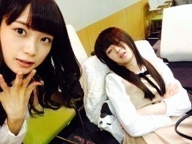
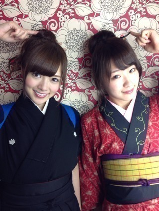

2013/1117Sun（´-`）.｡oO(か ずみん×239
.
.
こんばんは！
いつも応援ありがとう^ ^
.
収録や取材で毎日充実してます！
今日はお茶会とサイン会でした★
来てくださってありがとうでした♡
今日会えなかったみなさんは
12月までおあずけやね( *´艸｀)
期待して待っててよ？///
なんちゃって♪うぎうぎ

空き時間！
私が爆睡してる間にまいまいに
撮られてた((((/*0*)/
まいまいお茶目♡
.
.
.
.
.
.
.
今日でゆきなとせっちゃんは卒業。
正直まだ実感が湧いてないです...
.
私がオーディション受かってすぐ、
まだ実家から通ってる時ですね。
せっちゃんは私に
『帰れなくなったらいつでも
泊まりにおいでね^ ^』
と言ってくれて(T_T)
心強かったなぁ。嬉しかった。
本当に優しい気さくなせっちゃんが
ずーっと大好きです。
.
.
.
ゆきなはね、
洋服の好みがすっごく似ててね、
結構前にいつか一緒に
服買いに行こうって
言ってくれたの。
ゆきな覚えてないかもな〜>_<笑
いつか行きたいな〜(*´ｰ`*人)
おしとやかでおちゃめなゆきなが
ずーっと大好き。
.
.
いつのまにか
僕らは
何かに引き寄せられて
登っているのか
下りてるのか
問いかける心の坂道
.
乃木詩泣ける(T_T)
.
せっちゃん、ゆきな
2年3ヶ月お疲れ様でした。
2人の分まで、がんばる。


乃木坂は不滅じゃ。
.
.
.
.
--------------
乃木どこでは滝に入れなくて
すみませんでした(T_T)
本当のことを言うと
ガジで出たかったです。
皆が辛い思いをしてるのに、
家で寝ているわけにはいかないと。
あとロケへの執着心が
ありました(⌒-⌒; )
ロケが好きなので...
.
ですが今回は
スタッフさん&ドクターストップで
出れませんでした。
気管支炎でです(T_T)
MUSIC FAIRのすぐ後
だったのでちょうど酷くて、
本当すみませんでした...
.
.
もちろんもう元気になったから、
今なら何でもしますよ！！！
バレッタ...
大ヒットしますように(´;ω;`)
.
.
.

お団子娘。
右からのライトだから私が
光飛ばしすぎみたい！笑
.
.
それでは、今日はこの辺で(*´ｰ`*人)
またねっ(∩｡･ω･｡)⊃━♡°.*･love
2013/11/17 23:12
コメント(446)
かずみんアメイジング！！！
かずみ〜ん
かずみんお疲れ様です( ´ ▽ ` )ﾉ
かずみんお疲れ様(o^^o)
かずみん、おつかれさま！
寝顔、自分でupするとは笑
さすがですー。
寝顔、自分でupするとは笑
さすがですー。
ボロン！！＼(^^)／
滝残念だったねぇ。
でもかずみんが元気なのがいちばん！！！
また次のロケで楽しそうな姿が見られるといいな♪( ´θ｀)ノ
和装も素敵です
でもかずみんが元気なのがいちばん！！！
また次のロケで楽しそうな姿が見られるといいな♪( ´θ｀)ノ
和装も素敵です
こんばんは
寝てる姿も可愛ゆすうぅぅぅ
街娘も可愛ゆすうぅぅぅ
また後でかくねっ
寝てる姿も可愛ゆすうぅぅぅ
街娘も可愛ゆすうぅぅぅ
また後でかくねっ
お疲れ様ー！
VTRのときのかずみん悔しそうだったもんね(´Д`|||)
それはすごい伝わったよ♪
土日はポカポカしてて過ごしやすかったけど体壊さないように気を付けてね(´▽｀；)ゞ
バケラッター
乃木どこ？でドクターストップってなってたけど大丈夫?
大丈夫みんな頑張ってたからバレッタはヒットするよー！
乃木どこ？でドクターストップってなってたけど大丈夫?
大丈夫みんな頑張ってたからバレッタはヒットするよー！
かずみんヽ(´>∀<`*)ﾉバケラッタ！
今日は一日お疲れ様でした(*´ω｀*)
自分は行けなかったけど、楽しめたようで何よりで、、、
機会があれば、かずみんとお茶会できれば
なんて思います(*´ω｀*)
ゆきなとせっちゃん…(´；ω；｀)
そう、乃木坂は不滅！
かずみんいるしみんないるし
これからも是非とも作り上げて欲しいです！！
またフルで活躍できる機会に期待して
バレッタのヒット、みんなで祈りますぜヾ(*´∀｀*)ﾉ
ではでは、アメイジング＼(^o^)／
今日は一日お疲れ様でした(*´ω｀*)
自分は行けなかったけど、楽しめたようで何よりで、、、
機会があれば、かずみんとお茶会できれば
なんて思います(*´ω｀*)
ゆきなとせっちゃん…(´；ω；｀)
そう、乃木坂は不滅！
かずみんいるしみんないるし
これからも是非とも作り上げて欲しいです！！
またフルで活躍できる機会に期待して
バレッタのヒット、みんなで祈りますぜヾ(*´∀｀*)ﾉ
ではでは、アメイジング＼(^o^)／
バケラッター☆★☆★☆★☆★
また、ブログのコメント数が遅くなる呪い
かかりそう(T_T)
なんで、かずみんの時にー(´д｀|||)
かずみん爆睡してる時の顔面白いww
それと、メンバーの卒業は辛いよね。
でも、こんな時だからこそ気を引き締めて頑
張って欲しいです。
ではでは、
あーーめーーいーーじーーんーーぐーー！！
かずみん大好き
また、ブログのコメント数が遅くなる呪い
かかりそう(T_T)
なんで、かずみんの時にー(´д｀|||)
かずみん爆睡してる時の顔面白いww
それと、メンバーの卒業は辛いよね。
でも、こんな時だからこそ気を引き締めて頑
張って欲しいです。
ではでは、
あーーめーーいーーじーーんーーぐーー！！
かずみん大好き
かずみんお疲れ様です！
今日のお茶会行きたかったー(T . T)
とうとう宮澤さんと柏さん卒業しましたね。
2人ならこれからも自分の夢に向かって歩いていくことでしょう！！
今日はこの辺で(o^^o)
おやすみなさいm(_ _)m
今日のお茶会行きたかったー(T . T)
とうとう宮澤さんと柏さん卒業しましたね。
2人ならこれからも自分の夢に向かって歩いていくことでしょう！！
今日はこの辺で(o^^o)
おやすみなさいm(_ _)m
卒業悲しいなあ…
ボロン\( ˙-˙ )/
次の更新待ってるよ～～～～～(m--)m
ボロン\( ˙-˙ )/
次の更新待ってるよ～～～～～(m--)m
バケラッタ＼(^^)／
かずみ先輩はいつでも可愛いです☆
気管支炎治ってうぎうぎ頑張ってね♪
いつでも応援してます(^^)v
かずみ先輩はいつでも可愛いです☆
気管支炎治ってうぎうぎ頑張ってね♪
いつでも応援してます(^^)v
かずみん、こんばんは＼(^o^)／
じゅんこです！
かずみん、お茶会とサイン会お疲れさま！
ウチも本当に行きたかった…(>_< )
でも12月会えるからそれまで待っとくね！
めっちゃ楽しみー(≧∇≦)b
初遠征もするからホント楽しみだよー
ウチも正直実感がわかないんだ…
同じ1期生として2年半やってきたんだもんね。
せっちゃんとゆきなが卒業しちゃうのは寂しいよね…(>_< )
乃木どこ？見たよ！
滝行ってめっちゃ辛そう…
かずみん、これからも無理せず頑張ってね！
ずっーと応援してるから。
かずみん大好き♡♡
じゅんこです！
かずみん、お茶会とサイン会お疲れさま！
ウチも本当に行きたかった…(>_< )
でも12月会えるからそれまで待っとくね！
めっちゃ楽しみー(≧∇≦)b
初遠征もするからホント楽しみだよー
ウチも正直実感がわかないんだ…
同じ1期生として2年半やってきたんだもんね。
せっちゃんとゆきなが卒業しちゃうのは寂しいよね…(>_< )
乃木どこ？見たよ！
滝行ってめっちゃ辛そう…
かずみん、これからも無理せず頑張ってね！
ずっーと応援してるから。
かずみん大好き♡♡
乃木坂は永久に不滅だー！！＼(^o^)／
かずみんあんまり無理はしないでね！すまなそうにしてるの伝わってきたし、健康でいることがなによりなんだから！
かずみんには笑顔でいてもらいたいので( ´ ▽ ` )ﾉ
毎日大変だと思うけど頑張ってください！ 武道館当たったから楽しみだー!!
かずみんあんまり無理はしないでね！すまなそうにしてるの伝わってきたし、健康でいることがなによりなんだから！
かずみんには笑顔でいてもらいたいので( ´ ▽ ` )ﾉ
毎日大変だと思うけど頑張ってください！ 武道館当たったから楽しみだー!!
こんばんは♪
イベントお疲れ様でした♪
かずみんのblog読んでいるとき
丁度、乃木坂の詩
聞いてましたっ！
アメイジング＼(^-^)／
乃木どこ見ましたよー
体調悪かったからしょうがないですよね(T-T)
またいつか滝に打たれましょう(笑)
二人の卒業はヤッパリ寂しいですね(T-T)
明日も頑張ってください(^-^)/
では、お休みなさい(-.-)Zzz・・・・
バケラッターpart2★☆★☆★☆
気管支炎大丈夫だったの？？
無理はしないでねー
気管支炎大丈夫だったの？？
無理はしないでねー
ず～さん
口開いてるよ
(-_-#)
カワイイやん
＼(^ー^)／
口開いてるよ
(-_-#)
カワイイやん
＼(^ー^)／
かずみんは何も悪くないので休むのが賢明
気管支炎が酷くなってしまったら元も子もないからね
気管支炎が治って何よりです
気管支炎が酷くなってしまったら元も子もないからね
気管支炎が治って何よりです
かずみんこんばんは♪
テスト勉強なうだよー(笑)
今日はイベントお疲れ様ヾ(＠⌒ー⌒＠)ノ
おれは12月までお預けだからうぎうぎして待ってるね(笑)
かずみん爆睡やべー(笑)
２人の今後が楽しみだね！
滝行欠席だったね(>_<)
気管支炎だもん仕方ないよ(>_<)
にしてもバレッタがバケラッタに見えるわ(笑)
おやすみー♪
テスト勉強なうだよー(笑)
今日はイベントお疲れ様ヾ(＠⌒ー⌒＠)ノ
おれは12月までお預けだからうぎうぎして待ってるね(笑)
かずみん爆睡やべー(笑)
２人の今後が楽しみだね！
滝行欠席だったね(>_<)
気管支炎だもん仕方ないよ(>_<)
にしてもバレッタがバケラッタに見えるわ(笑)
おやすみー♪
バレッタ♪バケラッタ♪
今日は言わないのかぁーww
かずみーん
乃木どこみたよー
かずみんがヒット祈願してるの見れなくて
残念だったー
ちょっとしかかずみんテレビうっつてなかったー
来週楽しみだー
かずみん見れる♪
もっと長い時間みてたいわー
乃木どこ30分とか短すぎるー(TT)
てことでヒット祈願!！
7thバレッタ ヒットしますよーに＼(^^)／
乃木坂みんなが健康でいられますよーに＼(^^)／
てことで明日もガンバロ☆＼(^^)／←アメイジング
サイン会行きたかったなー(T-T)
12月の握手会に期待していよう。。
(∩｡･ω･｡)⊃━♡°.*･←なにこの顔文字可愛いw
やっほ～す
待ってました一実さんのブログ更新
今日起きてて良かったわ～
（いつも寝てる時間）
明日テストだけど…………
テスト中に一実さんみたいに爆睡かなぁ？
寝てたら起こされるけど……
まぁええや
卒業かぁ寂しくなるね
やっぱ卒業してほしくない？
でも自分の道だかんね
笑顔で送り出してあげなね（泣くなよ）
ロケ好きなんだ
滝にうたれるのすんげー厳しそう
バレッタのヒット祈願僕もしよー
阿毘羅吽欠 阿毘羅吽欠
ついでに高校の合格祈願も
受かりますように
12月まで我慢しまあぁぁす
またね
以上 おやす蜜柑っ
たくみんより
待ってました一実さんのブログ更新
今日起きてて良かったわ～
（いつも寝てる時間）
明日テストだけど…………
テスト中に一実さんみたいに爆睡かなぁ？
寝てたら起こされるけど……
まぁええや
卒業かぁ寂しくなるね
やっぱ卒業してほしくない？
でも自分の道だかんね
笑顔で送り出してあげなね（泣くなよ）
ロケ好きなんだ
滝にうたれるのすんげー厳しそう
バレッタのヒット祈願僕もしよー
阿毘羅吽欠 阿毘羅吽欠
ついでに高校の合格祈願も
受かりますように
12月まで我慢しまあぁぁす
またね
以上 おやす蜜柑っ
たくみんより
かずみん！！おーっす三└(┐卍^o^)卍ﾄﾞｩﾙﾙﾙ乃木坂の詩は本当にいい曲だよね( ◔ิω◔ิ)
俺も早くカズミンに会いたいぜーー！（＞ω＜）さみしぃ
色々と話そうね！！！
会うの楽しみにしてます！！
これからも共に頑張っていこうね！！！
オヤラッタ☆GOODNIGHT☆(；д；）
俺も早くカズミンに会いたいぜーー！（＞ω＜）さみしぃ
色々と話そうね！！！
会うの楽しみにしてます！！
これからも共に頑張っていこうね！！！
オヤラッタ☆GOODNIGHT☆(；д；）
♪♪かずみん♪♪
こんばんは=^・^=
今日はお茶会にサイン会
楽しめた？(*^^*)
せっちゃんとゆっきーなも乃木坂の活動はこれで最後だったんだね。
なんか実感わかないね…。
二人の決めた道ガジ頑張って欲しいね(^^)
かずみんも乃木坂道をガジっていきましょう＼(^O^)／
今日の乃木どこ？
滝行!!
かずみん出来なくて辛そうな顔してた(T_T)
けど、気管支炎で滝行したら大変なことになっちゃうから、今回は仕方ないよ！
次頑張ろうね(^^)v
ポジティブSAY!
バレッタのスタジオ版放送されたね!!
かずみんのピンショットもあってめっちゃ良かった♪
最後の決めポーズは反対位置になってて最初見失ってしまって、録画再生で気付いたよf(^^;
かずみさん♪
可愛い(*^^*)LOVE
またね(*・ｘ・)ノ~~~♪
こんばんは=^・^=
今日はお茶会にサイン会
楽しめた？(*^^*)
せっちゃんとゆっきーなも乃木坂の活動はこれで最後だったんだね。
なんか実感わかないね…。
二人の決めた道ガジ頑張って欲しいね(^^)
かずみんも乃木坂道をガジっていきましょう＼(^O^)／
今日の乃木どこ？
滝行!!
かずみん出来なくて辛そうな顔してた(T_T)
けど、気管支炎で滝行したら大変なことになっちゃうから、今回は仕方ないよ！
次頑張ろうね(^^)v
ポジティブSAY!
バレッタのスタジオ版放送されたね!!
かずみんのピンショットもあってめっちゃ良かった♪
最後の決めポーズは反対位置になってて最初見失ってしまって、録画再生で気付いたよf(^^;
かずみさん♪
可愛い(*^^*)LOVE
またね(*・ｘ・)ノ~~~♪
おやです(｡*･д･｡)ﾉ
寝顔w 疲れてるんだね＾＾
お疲れさまっ
一実さん 謝らないで～ 何も悪くないよ～ 健康第一！
身体が一番です！
バレッタ、ヒットします♪
宮澤さんと柏さん、お二人の未来を応援しましょう＾＾
お疲れさまっ
一実さん 謝らないで～ 何も悪くないよ～ 健康第一！
身体が一番です！
バレッタ、ヒットします♪
宮澤さんと柏さん、お二人の未来を応援しましょう＾＾
バケラッタ(=ﾟωﾟ)ﾉ
かずみん本当に爆睡してますねー笑
気緩んでますね^ ^
あ、それから武道館ライブ、当たりましたー♡
めっちゃ嬉しいです(o^^o)
日にち的に学校帰りに行く感じになりますが…笑
またかずみんを見れる！
乃木坂メンバーを見れる！
良い席を期待しつつそろそろ寝ます！
おやすみなさい♡
かずみん本当に爆睡してますねー笑
気緩んでますね^ ^
あ、それから武道館ライブ、当たりましたー♡
めっちゃ嬉しいです(o^^o)
日にち的に学校帰りに行く感じになりますが…笑
またかずみんを見れる！
乃木坂メンバーを見れる！
良い席を期待しつつそろそろ寝ます！
おやすみなさい♡
かずみーーーん！ヽ(^0^)ﾉ
今日も世界一可愛いね！
寝顔けっこう撮られてますなぁw
すんごい可愛いからおk(^ｰ^)
ほんと卒業は寂しいよね(v_v)
もっとお話したかったなぁ…
卒業しても頑張ってる2人を応援しなきゃね
かずみんの代わりにヒット祈願してこよっかな(^皿^)
お団子娘…素敵だ！
そいえば、まいやんと撮るときお団子がって
言ってなかったっけ？(笑)
らびゅ！
今日も世界一可愛いね！
寝顔けっこう撮られてますなぁw
すんごい可愛いからおk(^ｰ^)
ほんと卒業は寂しいよね(v_v)
もっとお話したかったなぁ…
卒業しても頑張ってる2人を応援しなきゃね
かずみんの代わりにヒット祈願してこよっかな(^皿^)
お団子娘…素敵だ！
そいえば、まいやんと撮るときお団子がって
言ってなかったっけ？(笑)
らびゅ！
バケラッター(^^)
お茶会とサイン会は行けなかったよー(>_<)
でも12月はもちろん握手会行くから、期待してる！めっっちゃ笑
乃木どこ、かずみんの活躍（？）が見れなかったのは残念だけど、
それはしょうがない！
最後の写メ、着物かわいー！
二人は今日で本当に卒業か。。。
寂しいけど、前に進んでいかなきゃね。。。
乃木坂の詩はきっと、二人を含めたみんなにとってずっと大切な歌だよね！
これからも二人と乃木坂を応援するよー！
お茶会とサイン会は行けなかったよー(>_<)
でも12月はもちろん握手会行くから、期待してる！めっっちゃ笑
乃木どこ、かずみんの活躍（？）が見れなかったのは残念だけど、
それはしょうがない！
最後の写メ、着物かわいー！
二人は今日で本当に卒業か。。。
寂しいけど、前に進んでいかなきゃね。。。
乃木坂の詩はきっと、二人を含めたみんなにとってずっと大切な歌だよね！
これからも二人と乃木坂を応援するよー！
バレッタバケラッタヽ(^o^)丿
かずみんとお茶会したかったん(´・ω・`)
12月の全握も個別も行くからね♪(#^.^#)
成良と幸奈のことは本当に寂しいけど夢の向かって巣立った二人をちゃんと応援しなきゃだよね！
かずみんの滝行見たかったけどかずみん風邪だったから仕方ないよ(´・ω・`)気管支炎僕もなったことあるけど辛いし無理すると長引くし(;´･ω･)
また次頑張ろうヽ(^o^)丿ポジピース♪
かずみんとお茶会したかったん(´・ω・`)
12月の全握も個別も行くからね♪(#^.^#)
成良と幸奈のことは本当に寂しいけど夢の向かって巣立った二人をちゃんと応援しなきゃだよね！
かずみんの滝行見たかったけどかずみん風邪だったから仕方ないよ(´・ω・`)気管支炎僕もなったことあるけど辛いし無理すると長引くし(;´･ω･)
また次頑張ろうヽ(^o^)丿ポジピース♪
かずみたーん(((o(*ﾟ▽ﾟ*)o)))
バケラッタ。・゜・(ノД`)・゜・。
淋しいぞー
会いたいぞー
せっちゃん・ゆきな…卒業おめでとうございます！！
前向きな卒業を応援しないで乃木坂ファミリーと呼べるのか…否、それは涙を堪えて送り出さないとね(T_T)
かずみたんも身体強くないんだから…無理したらあかんで…母さん心配やわー
て、おかんみたいに言ってみた（笑）
１２月は沢山かずみたんと会えると思うので、淋しいけど頑張るよー＼(^o^)／
かずみたんが、明日も笑顔でいれますように…
アメイジング＼(^o^)／
赤チョッパー帽子のまさひろ
バケラッタ。・゜・(ノД`)・゜・。
淋しいぞー
会いたいぞー
せっちゃん・ゆきな…卒業おめでとうございます！！
前向きな卒業を応援しないで乃木坂ファミリーと呼べるのか…否、それは涙を堪えて送り出さないとね(T_T)
かずみたんも身体強くないんだから…無理したらあかんで…母さん心配やわー
て、おかんみたいに言ってみた（笑）
１２月は沢山かずみたんと会えると思うので、淋しいけど頑張るよー＼(^o^)／
かずみたんが、明日も笑顔でいれますように…
アメイジング＼(^o^)／
赤チョッパー帽子のまさひろ
イベお疲れさま。
今日も乃木どこ面白かったよ＼(^o^)／
みんなが滝行で大変な目に会ってるのに面白いってのは、なんか不謹慎かな(´・ω・`)？
いや、ななみんならこの気持ちわかるかも(笑)
今日も乃木どこ面白かったよ＼(^o^)／
みんなが滝行で大変な目に会ってるのに面白いってのは、なんか不謹慎かな(´・ω・`)？
いや、ななみんならこの気持ちわかるかも(笑)
バケラッタ＼(^o^)／
お茶会＆サイン会おつかれさま(*´▽｀*)
僕も、乃木詩聴いてしんみりしてた
でも、せっちゃんとゆきなが決めたことだし、いつまでもこうしてるわけにはいかないね(>_<)
positive say! だね(^_^)
滝は残念だったけど、次に期待してるね！
(∩｡･ω･｡)⊃━♡°.*･love
↑かわいいね＼(^o^)／
でも、鋼の心を持った自分が
かずみんに釣られたりはしないよ(震え声)
それじゃあ、またね(゜Д゜;)
お茶会＆サイン会おつかれさま(*´▽｀*)
僕も、乃木詩聴いてしんみりしてた
でも、せっちゃんとゆきなが決めたことだし、いつまでもこうしてるわけにはいかないね(>_<)
positive say! だね(^_^)
滝は残念だったけど、次に期待してるね！
(∩｡･ω･｡)⊃━♡°.*･love
↑かわいいね＼(^o^)／
でも、鋼の心を持った自分が
かずみんに釣られたりはしないよ(震え声)
それじゃあ、またね(゜Д゜;)
かずみん喉大丈夫ですか；；；
ﾜﾀｼは喉やられたときは、お湯少な目で濃いめの花梨酒に、ハチミツをたっぷりいれて飲みます！あったかくて喉の痛みもやわらぎますよ……(*^^*)
お大事に……はやくよくなりますように(T_T)
ﾜﾀｼは喉やられたときは、お湯少な目で濃いめの花梨酒に、ハチミツをたっぷりいれて飲みます！あったかくて喉の痛みもやわらぎますよ……(*^^*)
お大事に……はやくよくなりますように(T_T)
寝てるとき口あいてるよ可愛いいいいいいいいいい
おはこんこん！(おはよう、こんにちは、こんばんはの略)
お茶会行きたかったよ～
12月まで待ちます！
12月は全握に個握があるので楽しみです。
乃木どこのことは気にしないでください！
スタジオにかずみんがいるだけで元気貰えますから(^_^)
明日から1週間頑張っていきましょう！
ポジティブ！SAY！
ポジティブ＼(^o^)／
お茶会行きたかったよ～
12月まで待ちます！
12月は全握に個握があるので楽しみです。
乃木どこのことは気にしないでください！
スタジオにかずみんがいるだけで元気貰えますから(^_^)
明日から1週間頑張っていきましょう！
ポジティブ！SAY！
ポジティブ＼(^o^)／
かずみんキャンペーン行けなくて残念だったね(;_;)
これからの7th活動での活躍期待してる!!
今日の乃木どこで、行き先のくじ引きしてるとき「ぎ」チームの四人が写ってる左でかずみんがアイドルらしからぬ顔を…(^_^;)笑
そうとう沖縄行きたかったんかな笑
これからの7th活動での活躍期待してる!!
今日の乃木どこで、行き先のくじ引きしてるとき「ぎ」チームの四人が写ってる左でかずみんがアイドルらしからぬ顔を…(^_^;)笑
そうとう沖縄行きたかったんかな笑
バケラッタ( ∩ˇωˇ∩)
かずみん、イベントお疲れさま！
行きたかったな〜、ほんとかずみん不足！！
助けて（ ｉ _ ｉ ）
でも、武道館当選したので、またまた三重からはるばる遠征します☆ミ
楽しみぃ♡♡
早くかずみんに会いたいよー！
写真どれもかわいくって困る♡
乃木どこロケ残念だったけど、またチャンスあったらいいな〜
バレッタよかったよぉヾ(＠⌒ー⌒＠)ノ飴鞭
ユニットもかずみんおめでとう♪
武道館で聴きたいな♡♡
これからも乃木坂、かずみんについてきます！
だいすき（´-`）.｡oO（ ♡
かずみん、イベントお疲れさま！
行きたかったな〜、ほんとかずみん不足！！
助けて（ ｉ _ ｉ ）
でも、武道館当選したので、またまた三重からはるばる遠征します☆ミ
楽しみぃ♡♡
早くかずみんに会いたいよー！
写真どれもかわいくって困る♡
乃木どこロケ残念だったけど、またチャンスあったらいいな〜
バレッタよかったよぉヾ(＠⌒ー⌒＠)ノ飴鞭
ユニットもかずみんおめでとう♪
武道館で聴きたいな♡♡
これからも乃木坂、かずみんについてきます！
だいすき（´-`）.｡oO（ ♡
バレッタバケラッタ～！
滝にうたれるかずみん見たかったけど、ドクターストップは適切やね！
ほんま無理はあかんよ～
まいまいナイス写メ(笑)
二人の卒業は残念や・・・
滝にうたれるかずみん見たかったけど、ドクターストップは適切やね！
ほんま無理はあかんよ～
まいまいナイス写メ(笑)
二人の卒業は残念や・・・
かずみん、こんばんは！
ブログ更新ありがとう！
毎日充実した日々が過ごせてるようで何よりです(^^)
今日はお茶会＆サイン会お疲れ様でした。
そしてありがとうございました。
何にしてもらうか前日まですごい迷ったんですよ(;^^A
私の一番好きなぐるぐるカーテンの
ジャケットにしてもらって本当に良かったです。
また一つ宝物が増えました。
額に入れて飾っておきますね！
まいまいに撮られちゃいましたね（笑）
ふふふ、かずみんよく寝顔撮られますね。
次の12月のイベント楽しみにしてます。
期待して待ってますよ！
運よくゆっきーなとせっちゃんの最後の挨拶が聞けました。
二人ともしっかりとした夢や目標を持っての卒業。
今日の二人の言葉を聞いて、
寂しさと同時にこれからを応援したくなりました。
そっか、せっちゃんは千葉だもんね。
その言葉、本当に優しいなあ(^^)
ゆっきーなは変顔を良くやるんだよね？
もっとそのお茶目な姿を見ていたかったな。
二人の思い受け継いでこれからも乃木坂46を
盛り上げて、坂を上り続けていって下さいね！
ああ、いいツーショットだ(つД`)ノ
乃木どこ見ましたよ。
今回も過酷ですね。
気持ちはすごくよく分かるけど
気管支炎だからね、それは仕方ないよ～。
無理したらひどくなっちゃうんもんね。
バレッタ大ヒットしそうだよ(^^)
なんかそんな気がします。
そんな訳で今日もお疲れ様です。
おっ、ホワイトハイだ～(〃∇〃)
やっぱりこのコンビを見ると乃木坂って感じがします。
今日聴いたかずみんとまいやんも参加してる
ユニット曲も素晴らしかったなあ。
早くCDで聴きたいですね。
ではでは、寒いけど風邪ひかないようにね。
応援してます！
それでは、また(^-^)/~~
ブログ更新ありがとう！
毎日充実した日々が過ごせてるようで何よりです(^^)
今日はお茶会＆サイン会お疲れ様でした。
そしてありがとうございました。
何にしてもらうか前日まですごい迷ったんですよ(;^^A
私の一番好きなぐるぐるカーテンの
ジャケットにしてもらって本当に良かったです。
また一つ宝物が増えました。
額に入れて飾っておきますね！
まいまいに撮られちゃいましたね（笑）
ふふふ、かずみんよく寝顔撮られますね。
次の12月のイベント楽しみにしてます。
期待して待ってますよ！
運よくゆっきーなとせっちゃんの最後の挨拶が聞けました。
二人ともしっかりとした夢や目標を持っての卒業。
今日の二人の言葉を聞いて、
寂しさと同時にこれからを応援したくなりました。
そっか、せっちゃんは千葉だもんね。
その言葉、本当に優しいなあ(^^)
ゆっきーなは変顔を良くやるんだよね？
もっとそのお茶目な姿を見ていたかったな。
二人の思い受け継いでこれからも乃木坂46を
盛り上げて、坂を上り続けていって下さいね！
ああ、いいツーショットだ(つД`)ノ
乃木どこ見ましたよ。
今回も過酷ですね。
気持ちはすごくよく分かるけど
気管支炎だからね、それは仕方ないよ～。
無理したらひどくなっちゃうんもんね。
バレッタ大ヒットしそうだよ(^^)
なんかそんな気がします。
そんな訳で今日もお疲れ様です。
おっ、ホワイトハイだ～(〃∇〃)
やっぱりこのコンビを見ると乃木坂って感じがします。
今日聴いたかずみんとまいやんも参加してる
ユニット曲も素晴らしかったなあ。
早くCDで聴きたいですね。
ではでは、寒いけど風邪ひかないようにね。
応援してます！
それでは、また(^-^)/~~
か、か、一実せんせいっ、更新ありがとうっ！
あやうくスルーするところでしたっ！
ふたりの卒業は淋しいけど、ポジティブにとらえたいですね。二人とも頑張れっ！
せんせいもふたりの分まで、頑張れ、る？
いや、頑張れっ！
あやうくスルーするところでしたっ！
ふたりの卒業は淋しいけど、ポジティブにとらえたいですね。二人とも頑張れっ！
せんせいもふたりの分まで、頑張れ、る？
いや、頑張れっ！
かずみん、お疲れ～(*^^*)
かずみんとお茶会したかったな～(T-T)
12月の握手会いっぱいお話しようね～((o(^∇^)o))
滝より体調優先!!
バレッタヒットの気持ちが強ければどこにいたってヒット祈願成功だよ(^-^)v
お団子かわいい～( 〃▽〃)
握手会でもやってほしいな～ww
やっぱり着物似合うね(●^o^●)
明日からも頑張ろ～d=(^o^)=b
ではでは、バケラッター(〃⌒ー⌒〃)ゞ
バケラッタ！kaz～(^_^)v
お茶会&サイン会お疲れさまでした！
行きたかったよぉ～(>_<)
でも、当たらないよぉ～(笑)
早くkazに会いたいよ(^^)/
そういえば、武道館ライブチケット
当選しました(^_^)v
一緒に応募した知り合いは落選で
自分だけが当選でしたヽ(^o^)丿
これもkazのおかげです！
ありがとう(^_^)v
武道館ライブ楽しみですヽ(^o^)丿
乃木どこ？みましたよ！
滝は残念だけど体調不良では
しょうがないですよ(>_<)
バレッタは大ヒット間違いないから
安心して発売日を待ちましょう！
爆睡kazもめっちゃ可愛いです(*^_^*)
勿論、お団子娘も(*^_^*)
では、おやすみloveヽ(^o^)丿
お茶会&サイン会お疲れさまでした！
行きたかったよぉ～(>_<)
でも、当たらないよぉ～(笑)
早くkazに会いたいよ(^^)/
そういえば、武道館ライブチケット
当選しました(^_^)v
一緒に応募した知り合いは落選で
自分だけが当選でしたヽ(^o^)丿
これもkazのおかげです！
ありがとう(^_^)v
武道館ライブ楽しみですヽ(^o^)丿
乃木どこ？みましたよ！
滝は残念だけど体調不良では
しょうがないですよ(>_<)
バレッタは大ヒット間違いないから
安心して発売日を待ちましょう！
爆睡kazもめっちゃ可愛いです(*^_^*)
勿論、お団子娘も(*^_^*)
では、おやすみloveヽ(^o^)丿
かずみーん！
こないだ牡蠣鍋たべたよーーーー！！
ぃいべ？ぃいべ？
何なら今度ご一緒に 笑
やっぱ蠣食べると元気が出る 栄養価が高山♪
かずみん
辛い時期があっても焦らないでな
だってさ
またのぼったときに見える景色は
より
色味を増しているから
そのことを楽しみに
登るんだよ
また くるよ☆
カンバレ
こないだ牡蠣鍋たべたよーーーー！！
ぃいべ？ぃいべ？
何なら今度ご一緒に 笑
やっぱ蠣食べると元気が出る 栄養価が高山♪
かずみん
辛い時期があっても焦らないでな
だってさ
またのぼったときに見える景色は
より
色味を増しているから
そのことを楽しみに
登るんだよ
また くるよ☆
カンバレ
ずーさんが誰よりも出たかったって思ってたのはファンならみんなわかってるよ♪(σ*´∀｀)ぇへ
こんばんは(´・ω・`)僕です。
気管支炎治ってよかったね♪( ´•̥ω•̥` )♡うう
後に引きずるような無理はホントしちゃだめだからね！
アイドルも他もみんなそうだけど！
健康第一!! m9( ﾟДﾟ) ﾄﾞｰﾝ!
当たり前だけど、体調崩さないように体を作るのも、アイドルというより社会人としてのマナーかな？
体質の事を以前言ってたけど、それも含めて可能な限り健康管理を徹底するのもプロ意識の一つだよ！(ﾟO ^*)b
体質に関しては以前コメした漢方＆東洋医学ね♪
では、おやすみぃ～♪_(:3」∠)_
(´･_･`).｡oO(ありがとう。大好きです。
白井姉妹 ∩^ω^∩
こんばんは(´・ω・`)僕です。
気管支炎治ってよかったね♪( ´•̥ω•̥` )♡うう
後に引きずるような無理はホントしちゃだめだからね！
アイドルも他もみんなそうだけど！
健康第一!! m9( ﾟДﾟ) ﾄﾞｰﾝ!
当たり前だけど、体調崩さないように体を作るのも、アイドルというより社会人としてのマナーかな？
体質の事を以前言ってたけど、それも含めて可能な限り健康管理を徹底するのもプロ意識の一つだよ！(ﾟO ^*)b
体質に関しては以前コメした漢方＆東洋医学ね♪
では、おやすみぃ～♪_(:3」∠)_
(´･_･`).｡oO(ありがとう。大好きです。
白井姉妹 ∩^ω^∩
かずみん毎日お疲れ様(^^)
ケンジ♪でっすε=ε=┏(・＿・)┛==卍
今日のサイン会とかお茶会お疲れ様♪
今回のイベント、応募しなかった…。
トランプとか楽しかった？( ・∇・)
寝顔がヤバイな(笑)
完全にオフモードじゃん！(´∇｀)
今日は仕事が休みでめっちゃ久しぶりのリアルタイムで乃木どこ見たらまさかのかずみんが体調不良っていう(笑)
体調に気をつけて&卒業したメンバーの分まで頑張ってな♪
それじゃあ明日も1日お互いに頑張ろう(^^)v
またね♪
ケンジ♪
ケンジ♪でっすε=ε=┏(・＿・)┛==卍
今日のサイン会とかお茶会お疲れ様♪
今回のイベント、応募しなかった…。
トランプとか楽しかった？( ・∇・)
寝顔がヤバイな(笑)
完全にオフモードじゃん！(´∇｀)
今日は仕事が休みでめっちゃ久しぶりのリアルタイムで乃木どこ見たらまさかのかずみんが体調不良っていう(笑)
体調に気をつけて&卒業したメンバーの分まで頑張ってな♪
それじゃあ明日も1日お互いに頑張ろう(^^)v
またね♪
ケンジ♪


サイン会に行ってましたーo(^o^)o
畠中サインです。
お疲れ様でした(^^ゞ
2人の背中をみんなで押してあげよう!!
へばっまずな(^-^)/~~